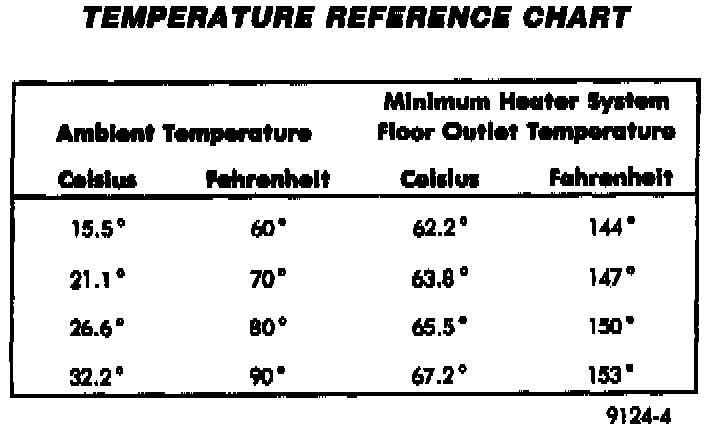
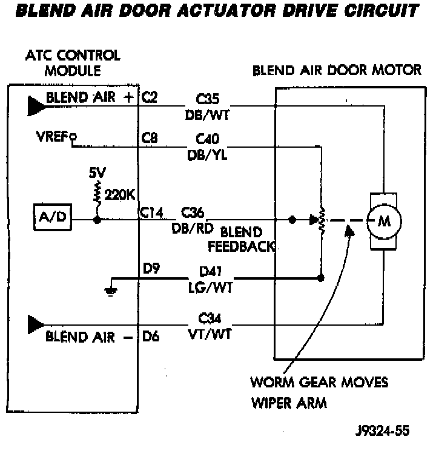

Temperature Control
Temperature Reference Chart:

If temperature cannot be adjusted with the TEMP knob on the control panel, the following could require service:
Blend Air Door Actuator Drive Circuit:

- Blend-air door circuit.
- Improper engine coolant temperature.
Under "Cooling System" Symptom Related Diagnostic Procedures